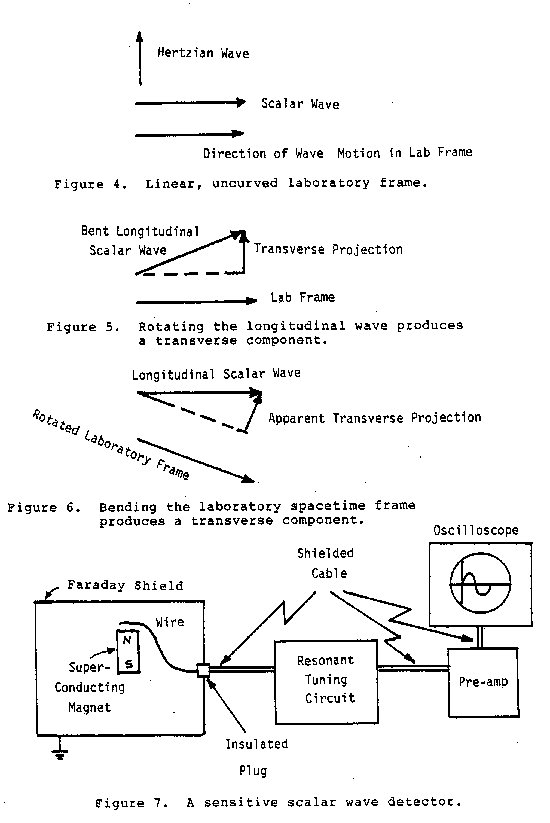

|
from STAR WARS NOW!
The Bohm-Aharonov Effect, Scalar Interferometry, and Soviet Weaponization
by Lt. Col. T.E.
Bearden (retd.), 1984
Copyright
A Sensitive Scalar Wave Detector
Very briefly we present a method of making a very sensitive scalar wave detector so that direct measurement and quantization can be established.
First, we regard one oscillation (one wavelength) of the scalar potential wave as a longitudinal photon. Note that this photon contains a substructure, which may be deliberately determined (when artificially made) or randomized (when naturally made in the idealized case).
For convenience we represent normal linearized vacuum (spacetime) as a horizontal or longitudinal vector (Figure 4), implying the direction of motion of the wave in the laboratory frame. By horizontal position in our diagram, we imply a linear, uncurved spacetime and a non-rotated frame. We represent the longitudinal scalar wave as a horizontal vector, and the usual Hertzian wave as a vertical or "transverse" vector. We visualize a normal detector as detecting only a vertical or "transverse" vector, as we have illustrated in Figure 4.
As can be seen, in a linear, unrotated or uncurved spacetime a pure scalar wave has no vertical component projected upon the laboratory frame vector, so it is not detectable by normal detectors.
To detect the scalar wave, of course we could bend it so that it has a projected vertical component in the laboratory frame (Figure 5). However, this would be an impure wave, not a pure scalar wave, and that is not what we wish.
A better way is to bend or curve spacetime itself in a small region, so that a longitudinal wave that passes through that region now possesses a vertical component with respect to that region (Figure 6). Thus a normal detector there will detect that vertical component. We conduct the detection current out of the "bent spacetime" region to an outside (normal) detector, and we then have a scalar wave detector.
To illustrate, we show conceptually how this has been successfully done. Figure 7 shows the concept. First, we utilize a magnetic pole to provide the infolded energy (potential) to bend or curve spacetime. To reach good sensitivity, we need a pole strength connected with a magnetic field strength of 40,000 Gauss or higher. We utilize a small superconducting magnet, which can reach field strengths of from 40,000 to 80,000 Gauss.

|
Then to prevent detection of superfluous "normal" radiation, we shield the entire magnet in a grounded Faraday cage, as shown in the figure. Hertzian waves will be grounded in this shield, while scalar waves will readily penetrate it undiminished. In other words, the Faraday cage serves as a "stripper," to strip away the ordinary waves, leaving only the scalar waves to penetrate inside. An ordinary wire lies at the top of the magnetic pole, in proximity to it. The wire runs out of the Faraday cage through an insulated port to a resonant tuning circuit, which is sharply tunable over the range of frequencies we are interested in. A preamp amplifies the output of the tuner, and in turn feeds the input of an oscilloscope or other detector.
With this detector we can select the frequency desired, and detect any passing scalar waves of that frequency. By other variations of amps and preamps, regenerative circuits, etc. we can obtain all the sensitivity desired, and utilize ordinary detection equipment already well-known and highly developed.
Additional Information about detecting Scalar Waves